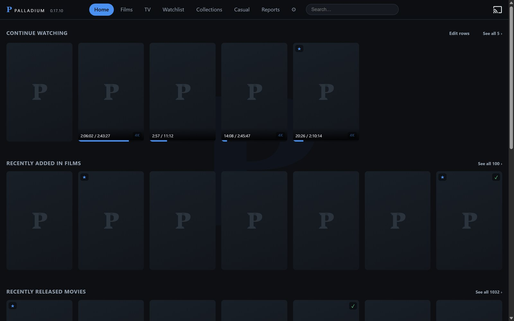
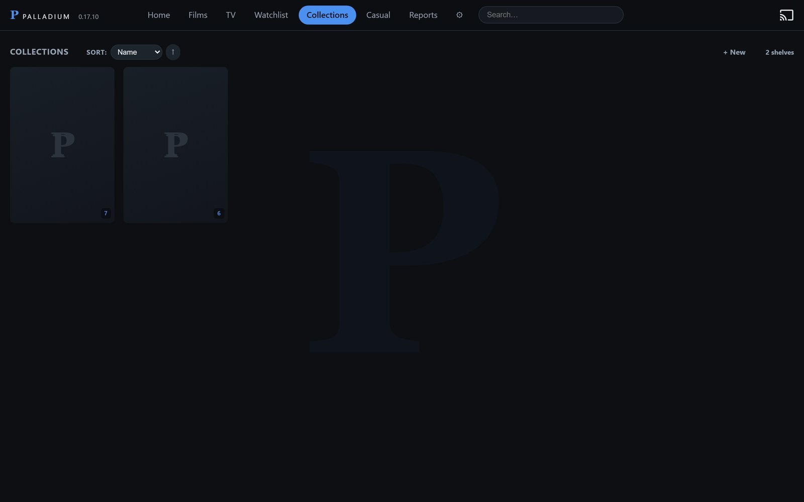
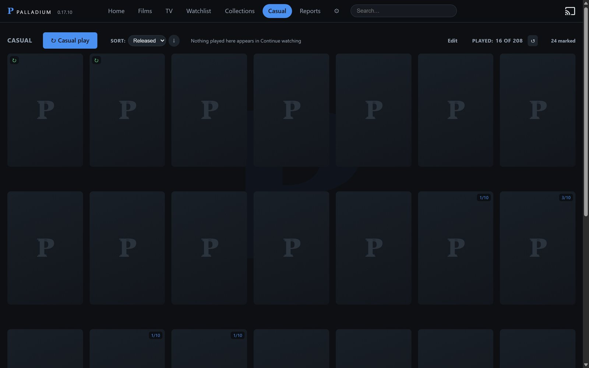
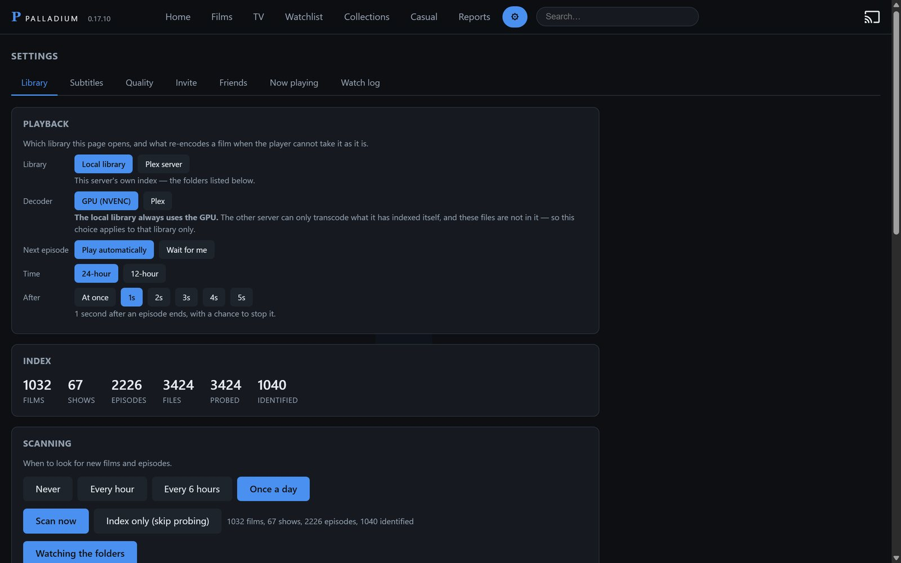

What it does that others do not.
Most of a media server is the same everywhere: read the folder, find the artwork, send the file. These are the parts that are not.
What it does
Filenames are parsed for title, year, season and episode; ffprobe reads codecs, resolution, channels and every track inside the file. New downloads are noticed by themselves - the folder is watched, and a file is read once it stops growing.
A release that counts a double-length premiere as two episodes is one ahead of the database for the rest of the season. The titles in the filenames are compared against the season's own, and the episodes are renumbered when four or more agree - so every later episode keeps its own title, plot and subtitle search instead of the next one's.
Matched against TMDB by title and year rather than by whichever answer is most popular, so a remake does not take the original's entry. A name spelt as the release spelt it is asked for in shortening steps, and the year decides which answer it is.
Fetched from OpenSubtitles by release name: the one named after your file leads the list, and a hash match whose name is for another release is marked rather than trusted. Timing is measured against the film's own audio and corrected. What carried an episode to the end is remembered for the series and fetched for the next one before it starts.
The file is sent untouched wherever the screen can take it. Where it cannot - a browser that will not read the codec, a picture subtitle that has to be drawn into the image - it is converted on the way out, on the graphics card if there is one. Which of the two is happening is said while it plays.
A rule rather than a list: words that must appear, words that must not, and what kind of thing it holds. Releases added later join by themselves; a title can still be pinned in or struck out by hand.
Things to put on without choosing. Press once and the next plays; nothing watched this way appears in Continue watching.
An invitation is a link. Each guest keeps their own place in every film, sees nothing else, and can be watched and stopped from the Now playing screen.
Any browser, an Android phone, and a television - the app pairs with a five-character code. Chromecast and AirPlay where the device offers them.
Point another computer at this one and it keeps a copy of what is on the watchlist and what is being watched, copied in the hours the first machine is asleep. When the first is off, the second answers in its place - the same library, the same places kept.
The app updates itself. The server says which build it is running against what the site publishes, and installs the new one when asked.
Worth having
Candidates are ranked by release name, not by how many people took them: the subtitle named after your file leads the list. A hash claim whose name is for another release is marked and pushed down rather than trusted - the hash is a file size and its first and last 64 kB, attached by hand at upload, and it is wrong often enough to matter.
Speech in the film's own audio is found and the subtitle is moved onto it. One offset, a drift, or a number for each part of the film, applied before playback and kept for that file.
What carried an episode to the end is what the series keeps. Five minutes before an episode ends the next one's subtitle is fetched, so it is beside the file before it starts.
A release that counts a double-length premiere as two is one ahead of the database for the rest of the season, and every episode then carries the next one's title, plot and subtitle search. The titles in the filenames are read and the episodes are put back on their own numbers - listed in Settings, with the last word yours.
The database answers in the order people looked things up, which puts a sequel above the film you have. Title and year are asked first, so a remake does not take the original's entry - and a name spelt as the release spelt it is asked for in shortening steps.
A rule, not a list: words that must appear, words that must not. Try it before saving and the posters wash green and red for what it takes and leaves; releases added later join by themselves.
A shelf for putting something on without choosing. It keeps its own place and never appears in Continue watching, so an evening of half-watched episodes does not bury what you are actually part-way through.
Size and position are a share of the picture rather than of the panel, so a phone and a television agree. On a scope film the text sits on the picture's own bottom edge, and with zoom it moves down to the frame with it.
An invitation is a link with a name on it. Each guest keeps their own place in every film and sees nothing else; Now playing says who is watching what, from where, and can stop it.
With a second machine holding copies, a film whose source goes away moves to the other one mid-play and keeps its position - a few seconds of buffering rather than an evening ending. Where both machines hold the file and neither has to convert it, the app reads from both at once and splits the file between them.
What somebody is watching now goes first, then the watchlist, then the rest, and copying keeps to the night hours so it is not competing with anybody watching. Watchlist episodes are kept from the last one watched forward, for as many hours as the first machine is expected to be down; when the disk fills, what goes is the oldest or the largest, whichever you chose.
Direct play or transcode, said while it plays. A watch log, hours by person, and a screen listing every client that has asked this server for anything today with the build it is running.
Built on
Free software, under the GNU Affero General Public License v3. Use it, change it, share it; a changed version given to anybody else, or run as a service for other people, has to carry its source under the same terms. The text, and the repository.
Python 3.13 with nothing but the standard library, compiled to native code for release. SQLite for the index. Runs as a tray icon on Windows 10 or 11, per user, no service and no administrator - or as a container on Linux, with ffmpeg inside it and one volume for everything it writes.
ffmpeg and ffprobe. Hardware encoding on NVIDIA (NVENC), AMD (AMF), Intel (Quick Sync) and Apple (VideoToolbox) - whichever the machine actually has, chosen by asking each one to encode a frame. Software x264 when there is none.
Byte-ranged direct play for a file the screen can read; a live-segmented transcode when it cannot, at the bitrate and height that screen asked for. Burned-in subtitles only for picture formats a client cannot decode.
Kotlin and Jetpack Compose, one build for the television and the phone. Media3 (ExoPlayer) for playback, with cues drawn by the app so size and placement are the same as in the browser. Pairs with a five-character code.
Plain JavaScript, no framework and no build step. HTML5 video for direct play, dash.js for adaptive streams, WebVTT for subtitles, Chromecast and AirPlay where the browser offers them.
TMDB for titles, artwork and episode lists, cached on disk. OpenSubtitles for subtitles, matched by release name and by the moviehash of the file.
Inno Setup, 34 MB, per-user, upgrades in place and keeps settings, invitations and the index. ffmpeg is fetched on first run rather than carried, which is what keeps the download small.
Home streaming, in plain terms.
A server on a machine you own reads the video files you already have and sends them to the screens in your house. No catalogue that changes every month, no film that disappears the week you meant to watch it, and no second subscription to see the rest of a series.
How it works
- One computer holds the files and runs the server. It can be the machine you use every day; it does not need to be a dedicated box.
- Every screen asks that machine for what it wants: a browser, a phone, a television.
- Inside the house the video travels over your own network, which is far faster than any line to the internet - a 4K film plays without buffering because nothing leaves the building.
- From outside, one port is opened so the same server can be reached from anywhere. That part is your connection's upload speed, and it is the only number that matters for watching away from home.
- A second computer can follow the first and keep copies of what is being watched, so the machine you use every day can be turned off at night without anybody's evening ending. The app moves between the two on its own.
What it is not
- It is not a catalogue. Nothing is provided with it: what you can watch is what you already have on disk.
- It is not a cloud service. Nothing is uploaded, nothing is stored elsewhere, and it keeps working if the company that wrote it stops existing.
- It is not a way to share a library with strangers. Guests are people you invite by link, and you can see what they are watching and stop it.
What you need
- A computer that stays on while somebody is watching - Windows, or Linux with Docker. An ordinary desktop is more than enough; most files are sent as they are, which costs almost nothing.
- Storage. Films are between 2 and 60 GB each depending on how they were made; a series is smaller per episode and larger in total.
- A network. Wired is best for the machine holding the files; the screens can be on wifi.
- For watching away from home: a router you can forward a port on, and enough upload speed - about 8 Mbit/s for a 1080p film sent as it is, less if it is converted on the way out.
Where the work goes
Most of the time the file is sent untouched and the screen does the decoding - that is what a television is for, and it costs the server almost nothing. Converting is the expensive case: a browser that cannot read the codec, or a picture-based subtitle that has to be drawn into the image. Palladium uses the graphics card for that when there is one, and says plainly which of the two is happening while something plays.
Your library, on every screen in the house.
Palladium serves the films and programmes on your own machine to a television, a phone and any browser. One folder in, posters and subtitles out. No account, no subscription, and nothing leaves the house unless you invite somebody.
The server
One installer, for the machine that holds the files.
Download for Windows
Windows 10 or 11, 64-bit · version … ·
…
SHA-256 …
The Android app, for a phone or a television, is on
palladium.video/app - but you rarely need this page for it:
the server hands out the app itself, at its own version. App and server
are one release with one number, so the installer above carries the app that
matches it, and every screen in the house ends up on the same build without
anybody fetching anything.
It is not on the Play Store: on a phone you allow the browser to install it once
and tell Play Protect to go ahead, and on a television the server hands it over
by a five-character code typed into Downloader.
The steps are written out there.
On Linux, in a container
The same server, with
ffmpeg already inside it. Everything it writes lives in /data; your
films are mounted read-only and never written to.
services:
palladium:
image: ghcr.io/grovestick/palladium:latest
ports: ["8765:8765"]
environment: [TZ=Europe/Stockholm]
volumes:
- palladium-data:/data
- /srv/films:/media/films:ro
- /srv/series:/media/series:ro
devices: ["/dev/dri:/dev/dri"] # Intel Quick Sync, optional
restart: unless-stopped
volumes: { palladium-data: }
Set a password on first run: without one, everybody on that network is treated
as the owner · conversions run on the processor unless a card is passed
through - Quick Sync through /dev/dri, an NVIDIA card through the
NVIDIA container toolkit and gpus: all.
Plays what you have
The file goes to the screen as it is wherever the screen can take it, and is converted only when it cannot. A television usually gets the original.
Subtitles that fit
Fetched by release, checked against the file and remembered per series, in the size and position you set once.
People you invite
A guest gets a link, their own place in every film, and nothing else. You see what is playing and can stop it.
What you need
- Windows 10 or 11, 64-bit - the server runs as a tray icon and starts at logon - or Linux with Docker, using the compose file above.
- Your films and programmes in folders. Nothing is moved or renamed.
- An internet connection on first run: ffmpeg is fetched then rather than carried in the installer, which keeps this download to 34 MB.
- An NVIDIA card is used if there is one, and not needed if there is not.
Installing it
- Run the installer. Windows will say it does not recognise it - the build is not signed yet. Compare the SHA-256 above if you want to be sure, then choose More info and Run anyway.
- Point it at your folders. The first scan takes a few minutes and the posters arrive as it goes.
- Open the address it shows, or install the Android app from the same page and type the five-character code.
While it is early
- Report faults from the Reports tab inside Palladium - it carries the version and what the server was doing, which a message never does.
- Updates arrive in the app by themselves; the server says when a new build is out and installs it on request.
All of it, in the open.
Palladium is free software under the GNU Affero General Public License v3. The server, the web client, the Android app and the pages you are reading are one repository, and it is the same code the installer is built from.
The repository
Everything, at the version currently published.
github.com/Grovestick/palladiumAGPL-3.0 · Python 3 and the standard library, plain JavaScript, Kotlin and Compose · no build step for the web client
What the licence asks
- Use it, read it, change it, run it for whatever you like.
- If you give a changed version to somebody else, or run one as a service other people use, that version's source has to be available to them under the same terms.
- That last clause is the whole point of choosing this licence rather than a looser one: it keeps Palladium from being quietly turned into somebody's closed product.
Building it yourself
- The server runs from source with nothing installed but Python 3.11 or
newer and ffmpeg:
python pd-server.py. - The web client is plain JavaScript with no build step - the files in
static/are what the browser gets. - The Android app is Kotlin and Compose in
android/. Build it and put the APK beside the server, and that server hands it out itself. - The container builds from the Dockerfile in the root, for amd64 and arm64.
Faults and changes
- Report a fault from Reports inside Palladium: it carries the version and what the server was doing, which a message never does.
- Anything else, including patches: the repository, or supportpalladium@gmail.com.
Your files, on every screen.
Palladium indexes the folders you point it at, fetches artwork and subtitles for what it finds, and serves it to a browser, an Android phone and a television. Nothing is moved, renamed or uploaded.
Point it at the folders holding your films and programmes. It reads them, finds the artwork and the subtitles, and serves the lot to whatever screen asks - a browser, a phone, a television. The pictures below are the browser client, with the artwork left out.

Collections
A collection is a rule rather than a list: words that must appear in the title, words that must not, and what kind of thing it holds. Anything added to the library later that answers the rule joins by itself, and any title can be pinned in or struck out by hand.

Casual watching
A shelf of things to put on without choosing: press once and the next one plays. What is watched this way keeps its own place and never appears in Continue watching, which is the point of it.

Subtitles, set once
Size, face, colour, background and position, kept per screen and shared by every client - a television and a phone disagree about what 100% means, so the number is a share of the picture rather than of the panel. Subtitles are fetched by release, checked against the file, and remembered for the series they belong to.

What it does not do
- Move, rename or alter a file.
- Upload anything, or ask for an account.
- Provide anything to watch: the library is what is already on the disk.
- Convert a film the screen can play as it is.